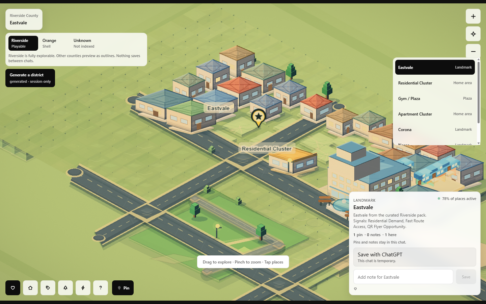
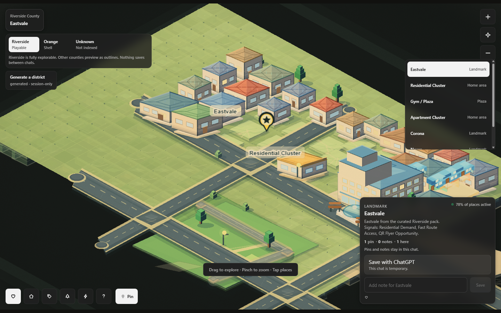
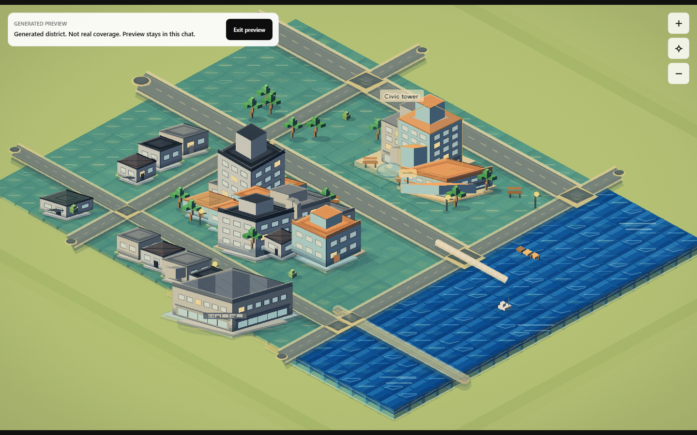
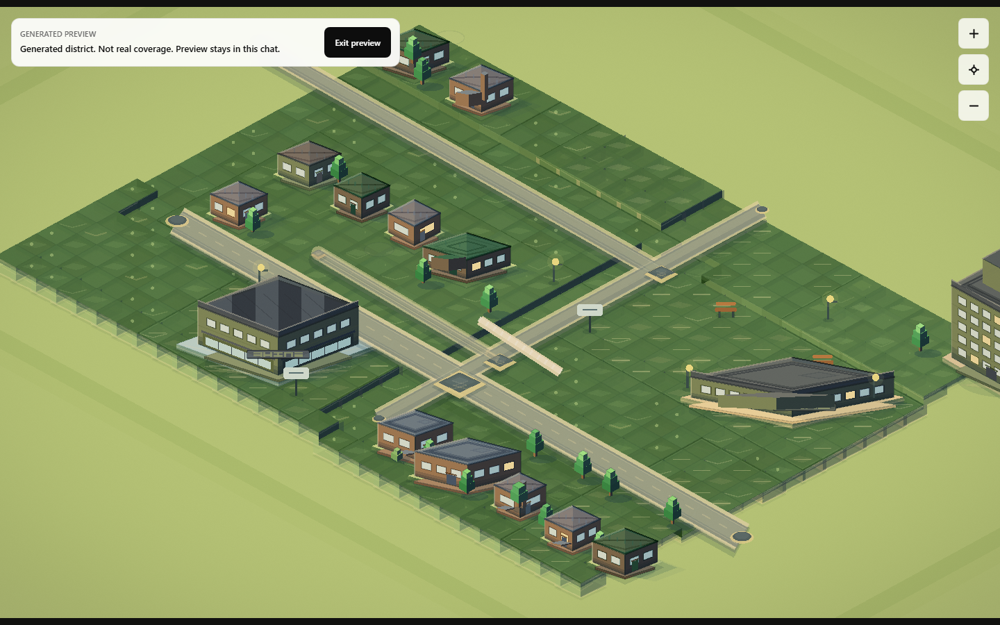
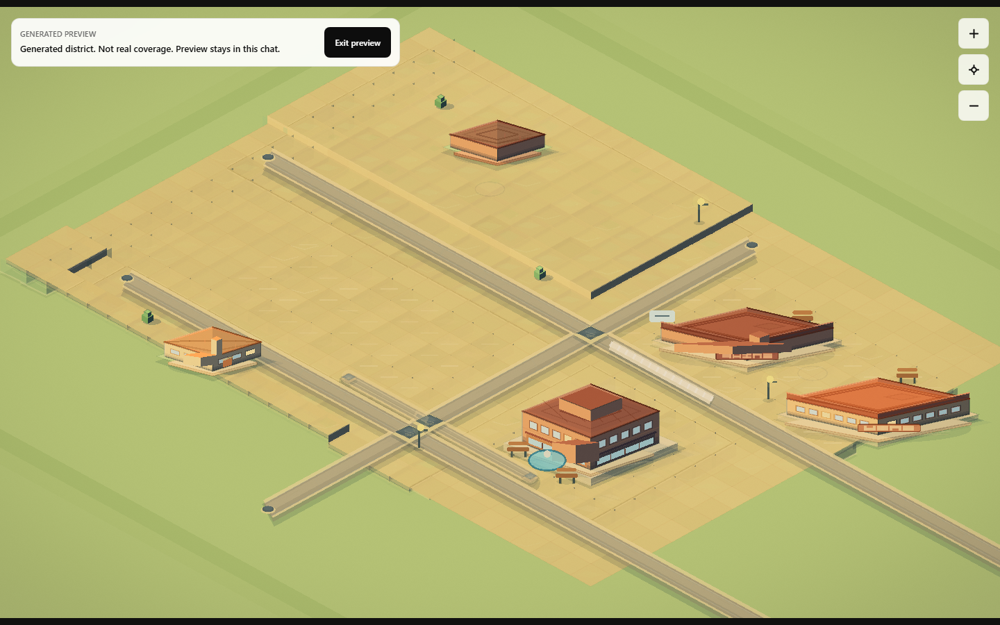
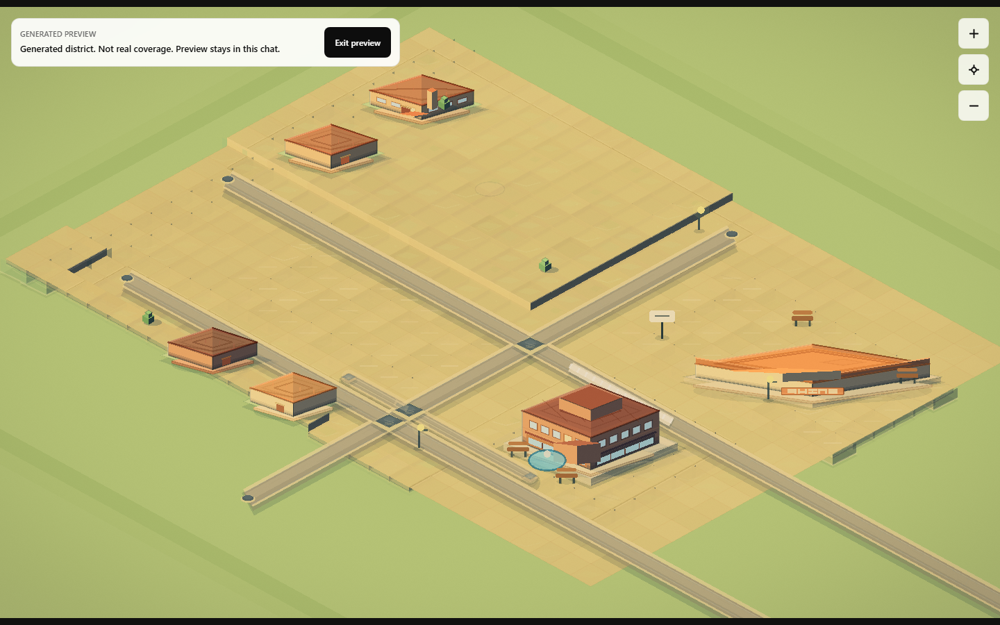

01
Ask for any US county.
Atlas names what is playable, what is a shell, and what is still unsupported.
Explore Riverside County as a voxel diorama in ChatGPT, with generated draft previews for indexed US counties.


Atlas names what is playable, what is a shell, and what is still unsupported.
Riverside opens as the curated map. Indexed counties can show generated draft previews.
Mark places while you look around. Nothing becomes account memory in the V1 app surface.




Things live in this chat. Atlas does not save state, provider data, XP, accounts, checkout, posts, messages, ad buys, scraped lists, or live campaign execution.
Generated draft previews are synthetic, session-only, non-playable, provider-free, and not local truth. They are not real coverage.
Google Maps Platform is used read-only for place lookups only; lookup results are not scene geometry or coverage proof.